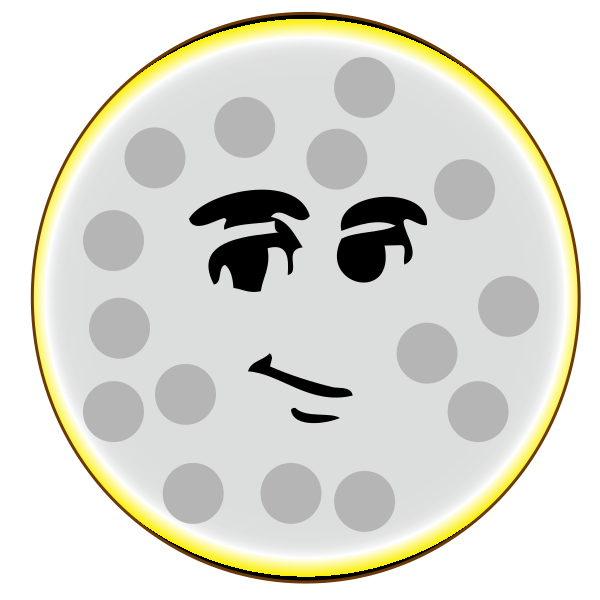
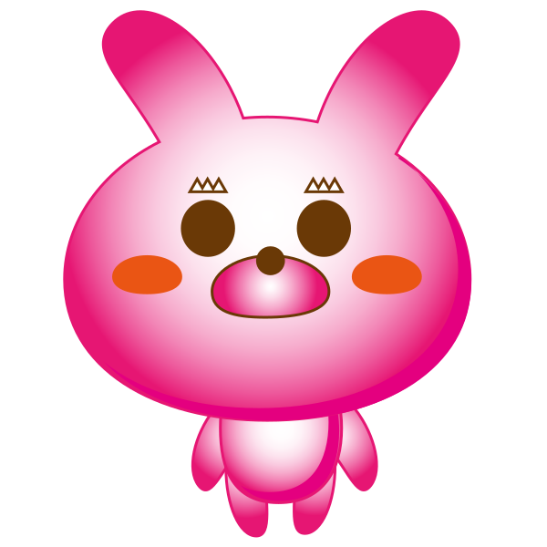
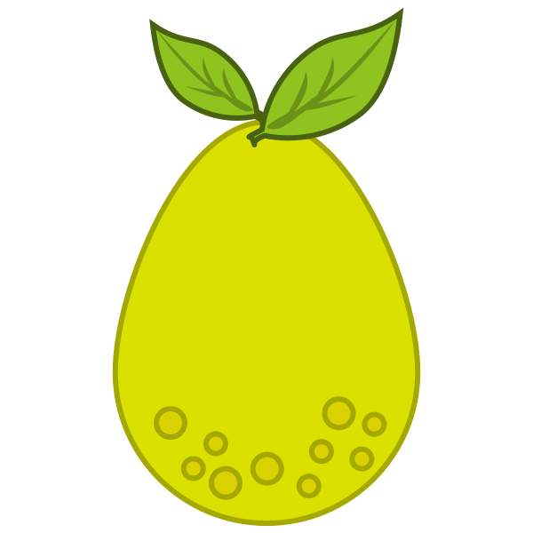
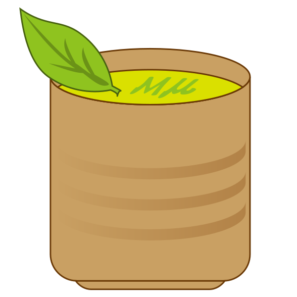
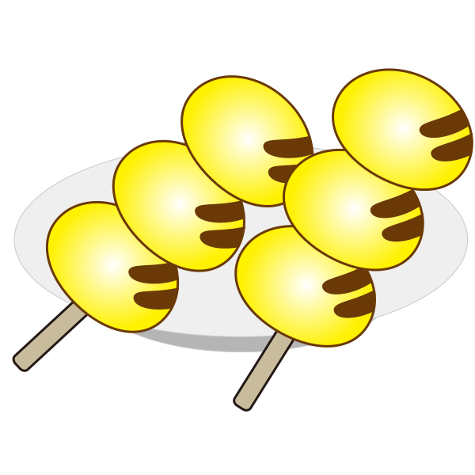
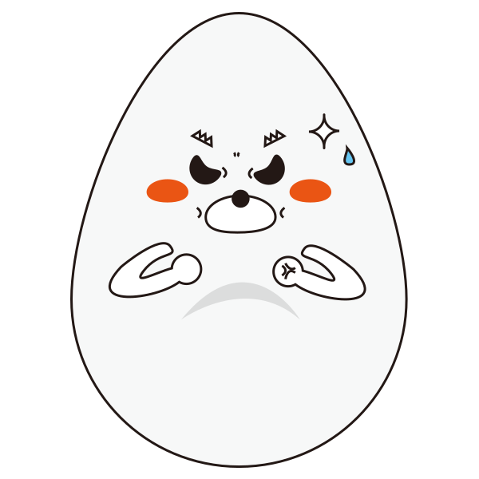
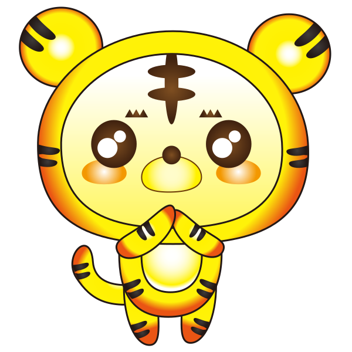

逐月神攝手遊戲說明
歡迎來到中秋追影捕捉挑戰！你的任務是在限時內，捕捉到關卡指定的所有「目標」，同時「避開」所有禁忌物品。
如何遊玩:
- 遊戲區域內會漂浮著各種中秋元素 (例如：月亮、玉兔、月餅、柚子、抹茶、珍珠奶茶、糯米糰子)。
- 點擊畫面任何位置，即會觸發一次「全螢幕快照」。
- 如果快照中出現任何 爆氣炸蛋 或 老虎，你將立即失敗！
- 如果快照中同時出現所有「任務目標」 (例如：月亮、玉兔、月餅、珍珠奶茶)，且沒有任何禁忌物品，你將成功晉級！
- 捕捉 快樂鯉魚可獲得額外獎勵分數，但僅限在成功晉級的回合！
- 點擊「下一關」或「再試一次」才會讓物件重新移動。如果快照沒有導致晉級或失敗，會出現「繼續捕捉」按鈕，點擊後物件也會恢復移動。
遊戲提示:
- 每個關卡的時間和目標都不同，請仔細查看。
- 遊戲會隨著關卡推進而增加難度，物品移動速度會變快！
- 精準判斷快照時機是獲勝的關鍵！